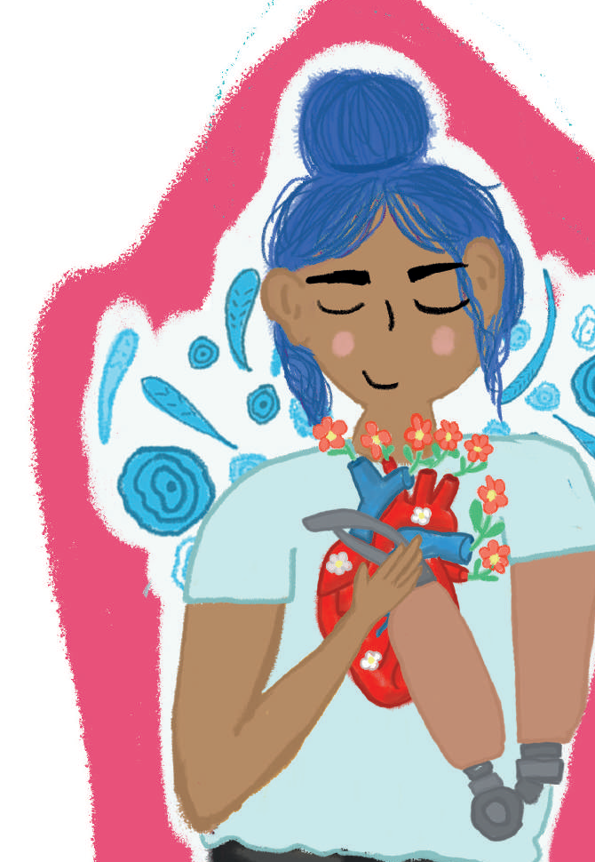

En los demás, el impacto se evidencia no solo en el aumento de la productividad, sino además en la mejora de las relaciones interpersonales, pues implica trabajar aspectos como el manejo emocional y la capacidad para resolver conflictos.
Self-care does not consist of practicing isolated and meaningless care activities, the goal is to take responsibility for one's own health and, in many cases, to start a personal work process, which can take quite a while.